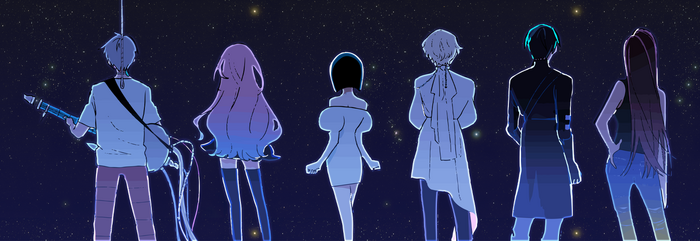

ALIEN STAGE

Alien Stage es una popular serie web de vídeos musicales distópicos creada por VIVINOS, ambientada en un mundo donde alienígenas esclavizan humanos y los obligan a competir en un brutal concurso de canto. Los participantes, criados como mascotas, luchan por sobrevivir y obtener puntos, enfrentándose a la muerte si pierden